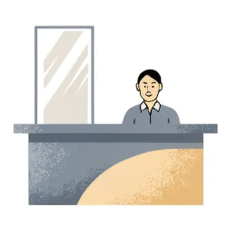
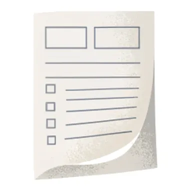
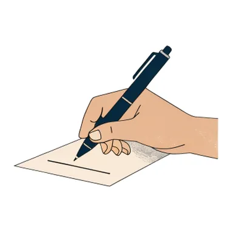
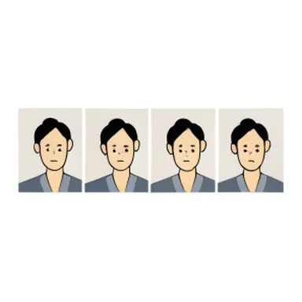
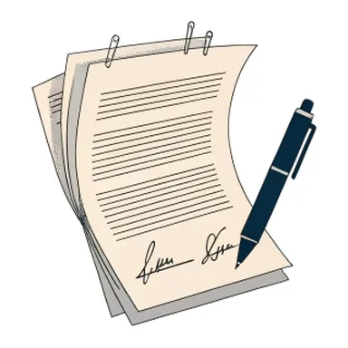
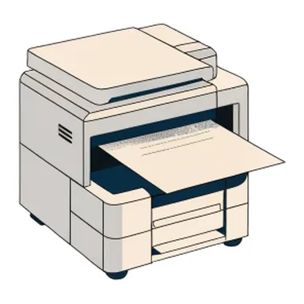
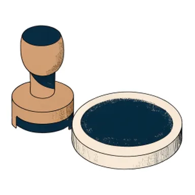
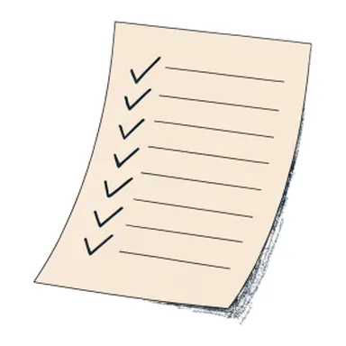

배우기 전에 먼저 해 보세요. 틀려도 괜찮아요.
Können Sie …?보다 더 정중한 말은 무엇일까요?
können을 könnten으로 바꾸면 더 정중해요.
Ich weiß nicht, ob ich einen Termin brauche.는 무슨 뜻일까요?
ob은 '~인지'라는 뜻이에요.
독일에 살면 관청에 갈 일이 꼭 생겨요. 체류 허가를 연장하고, 증명서를 받고, 서식을 채워야 해요. 그럴 때는 예약하고, 서류를 준비하고, 모르는 것을 정중하게 물어요. 이 과에서는 정중하게 부탁하는 말과 질문을 다른 문장 안에 넣어 묻는 법을 배워요.
문법 höfliche Fragen (Könnten Sie …? Ich hätte gern …), indirekte Fragen (Wissen Sie, wo …? ob …)
과제대학외국인청에서 유학 체류 허가 연장하기
과제직장외국인청에서 취업 체류 허가 연장하기
이 과를 마치면 관청에서 용건을 말하고, 서식을 이해하고 채우고, 모르는 것을 정중하게 물을 수 있어요.
이 과에서 쓸 말이에요. 눌러서 먼저 들어 보세요.
배우기 전에 먼저 해 보세요. 틀려도 괜찮아요.
Können Sie …?보다 더 정중한 말은 무엇일까요?
können을 könnten으로 바꾸면 더 정중해요.
Ich weiß nicht, ob ich einen Termin brauche.는 무슨 뜻일까요?
ob은 '~인지'라는 뜻이에요.
Lektion 3의 낱말 다섯 개를 다시 떠올려 보세요.
11월의 월요일 아침, 외국인청 안내 창구예요. Jiu의 체류 허가는 1월 말에 끝나요.
들으면서 찾아보세요. 예약은 어떻게 하나요?
금요일 아침 9시, 외국인청 창구예요. Dohyun이 예약한 시간에 왔어요.
들으면서 찾아보세요. Dohyun은 무엇을 잊었나요?
수업이 끝난 뒤 어학원 교실이에요. Sora가 주민 센터에 낼 서식을 Frau Becker에게 보여 줘요.
들으면서 찾아보세요. Sora는 왜 증명서가 필요한가요?
세 대화를 듣고 답하세요.
Jiu의 체류 허가는 언제까지 유효한가요?
예약은 어떻게 하나요?
Jiu muss das Formular auf dem Amt ausfüllen.
집에서 온라인으로 채워서 가져가도 돼요.
Dohyun은 무엇을 잊었나요?
Dohyun은 새 카드를 언제 받나요?
Dohyun darf in der Wartezeit nicht arbeiten.
증명서를 받아서 계속 일할 수 있어요.
Familienstand 칸에는 무엇을 표시하나요?
Sora braucht die Meldebescheinigung für die Schule von Hana.
낱말 51개예요. 낱말이나 예문 앞의 단추를 누르면 소리가 나요. 명사는 der, die, das를 색으로 구분했어요.
das Amt, die Ämter 관청
Morgen muss ich aufs Amt.내일 관청에 가야 해요.
die Ausländerbehörde 외국인청
Ich habe einen Termin bei der Ausländerbehörde.외국인청에 예약이 있어요.
das Bürgeramt 주민 센터
Die Anmeldung macht man im Bürgeramt.전입 신고는 주민 센터에서 해요.
die Aufenthaltserlaubnis 체류 허가
Meine Aufenthaltserlaubnis ist bis Januar gültig.제 체류 허가는 1월까지 유효해요.
gültig 유효한
Der Pass ist noch zwei Jahre gültig.그 여권은 아직 2년 동안 유효해요.
verlängern (hat verlängert) 연장하다
Ich möchte meine Aufenthaltserlaubnis verlängern.체류 허가를 연장하고 싶어요.
die Verlängerung, die Verlängerungen 연장
Die Verlängerung dauert sechs Wochen.연장은 6주 걸려요.
der Antrag, die Anträge 신청, 신청서
Ich fülle den Antrag aus.저는 신청서를 채워요.
beantragen (hat beantragt) 신청하다
Ich möchte eine Meldebescheinigung beantragen.거주 증명서를 신청하고 싶어요.
die Bescheinigung, die Bescheinigungen 증명서, 확인서
Ich brauche eine Bescheinigung von der Sprachschule.어학원 증명서가 필요해요.
die Meldebescheinigung 거주 증명서
Ich hätte gern eine Meldebescheinigung.거주 증명서를 받고 싶습니다.
die Bestätigung, die Bestätigungen 확인서, 확인
Ich habe eine Bestätigung von der Firma.회사 확인서가 있어요.
die Gebühr, die Gebühren 수수료
Die Gebühr zahlen Sie an der Kasse.수수료는 계산대에서 내세요.

der Schalter, die Schalter 창구
Gehen Sie bitte zu Schalter drei.3번 창구로 가세요.
die Wartezeit, die Wartezeiten 기다리는 시간
Die Wartezeit ist lang.기다리는 시간이 길어요.
die Internetseite, die Internetseiten 누리집, 웹사이트
Auf der Internetseite kann man einen Termin buchen.누리집에서 예약할 수 있어요.
die Unterlagen (필요한) 서류
Haben Sie alle Unterlagen dabei?서류는 다 가져오셨어요?

das Formular, die Formulare 서식
Das Formular ist lang.그 서식은 길어요.
ausfüllen (hat ausgefüllt) (서식을) 채우다
Füllen Sie bitte das Formular aus.서식을 채워 주세요.
unterschreiben (hat unterschrieben) 서명하다
Könnten Sie bitte hier unterschreiben?여기에 서명해 주시겠어요?

die Unterschrift, die Unterschriften 서명
Hier fehlt Ihre Unterschrift.여기에 서명이 빠졌어요.
ankreuzen (hat angekreuzt) (칸에) 표시하다
Kreuzen Sie bitte Ja oder Nein an.Ja나 Nein에 표시해 주세요.
der Pass, die Pässe 여권
Hier ist mein Pass.여기 제 여권입니다.
der Ausweis, die Ausweise 신분증
Haben Sie einen Ausweis?신분증 있으세요?

das Passfoto, die Passfotos 여권 사진
Es fehlt noch ein Passfoto.여권 사진이 하나 빠졌어요.

der Vertrag, die Verträge 계약, 계약서
Ich habe den Vertrag unterschrieben.저는 계약서에 서명했어요.
der Mietvertrag, die Mietverträge 임대 계약서
Bringen Sie den Mietvertrag mit.임대 계약서를 가져오세요.
der Arbeitsvertrag, die Arbeitsverträge 근로 계약서
Hier ist mein Arbeitsvertrag.여기 제 근로 계약서입니다.

die Kopie, die Kopien 복사본
Ich brauche eine Kopie vom Pass.여권 복사본이 필요해요.
das Original, die Originale 원본
Bringen Sie bitte das Original mit.원본을 가져오세요.
die Krankenversicherung, die Krankenversicherungen 건강보험
Haben Sie eine Krankenversicherung?건강보험이 있으세요?

der Stempel, die Stempel 도장
Auf der Bescheinigung ist ein Stempel.증명서에 도장이 찍혀 있어요.
das Geburtsdatum 생년월일
Schreiben Sie hier Ihr Geburtsdatum.여기에 생년월일을 쓰세요.
der Familienstand 혼인 여부
Mein Familienstand ist ledig.저는 미혼이에요.
die Staatsangehörigkeit, die Staatsangehörigkeiten 국적
Meine Staatsangehörigkeit ist koreanisch.제 국적은 한국이에요.
Könnten Sie …? ~해 주실 수 있을까요?
Könnten Sie mir bitte helfen?도와주실 수 있을까요?
Ich hätte gern … ~을 받고 싶습니다, ~을 주세요
Ich hätte gern einen Termin.예약을 하고 싶습니다.
wissen (du weißt, hat gewusst) 알다
Wissen Sie, wo der Schalter ist?창구가 어디인지 아세요?
ob ~인지
Ich weiß nicht, ob ich einen Termin brauche.예약이 필요한지 모르겠어요.
bedeuten (hat bedeutet) 뜻하다
Was bedeutet das Wort?그 낱말은 무슨 뜻이에요?
wiederholen (hat wiederholt) 되풀이하다, 다시 말하다
Könnten Sie das bitte wiederholen?다시 말씀해 주시겠어요?
aufschreiben (hat aufgeschrieben) 적다, 적어 주다
Könnten Sie das bitte aufschreiben?적어 주시겠어요?
langsam 천천히, 느린
Sprechen Sie bitte langsam.천천히 말씀해 주세요.
fehlen (hat gefehlt) 빠져 있다, 없다
Es fehlt noch ein Foto.사진이 하나 빠졌어요.
dabeihaben (hat dabeigehabt) 가지고 있다
Ich habe meinen Pass dabei.여권을 가지고 있어요.

die Liste, die Listen 목록
Auf der Liste steht alles.목록에 다 적혀 있어요.
die Auskunft, die Auskünfte 안내, 알려 주는 말
Ich hätte gern eine Auskunft.한 가지 여쭤보고 싶습니다.
das Erdgeschoss 1층
Der Automat steht im Erdgeschoss.자판기는 1층에 있어요.
Nehmen Sie bitte Platz. 앉으세요.
Guten Morgen, nehmen Sie bitte Platz.좋은 아침입니다, 앉으세요.
ohne ~ 없이
Ohne Termin geht es nicht.예약 없이는 안 돼요.
genau 맞아요, 정확한
Ja, genau.네, 맞아요.
이 과의 낱말로 여덟 문제를 풀어요.
줄을 누르면 소리가 나요. 관청, 병원, 회사에서 처음 보는 사람에게 쓰는 말이에요.
줄을 누르면 소리가 나요. wissen은 ich와 er, sie에서 모양이 바뀌어요.
규칙
können을 könnten으로 바꾸면 훨씬 정중한 부탁이 돼요. 관청이나 가게처럼 처음 보는 사람에게 말할 때 써요. 다른 조동사처럼 동사는 문장 끝에 Infinitiv로 와요.
| 주어 | können | könnten |
|---|---|---|
| du | kannst | könntest |
| Sie | können | könnten |
| ihr | könnt | könntet |
주의 bitte를 넣으면 더 부드러워요. bitte는 보통 Sie나 mir 뒤에 와요. Könnten Sie mir bitte sagen, wo der Schalter ist? 내가 해도 되는지 물을 때는 Könnte ich …?라고 해요. Könnte ich das Foto später bringen?
규칙을 보고 바로 확인해 보세요.
처음 보는 직원에게 부탁할 때 가장 정중한 말은 무엇인가요?
규칙
haben을 hätte로 바꾸면 '~이 있으면 좋겠다'는 정중한 말이 돼요. Ich hätte gern 뒤에는 원하는 것을 Akkusativ로 써요. 가게, 식당, 관청에서 두루 써요.
| 주어 | hätte |
|---|---|
| ich | hätte |
| du | hättest |
| er, sie, es | hätte |
| wir | hätten |
| ihr | hättet |
| sie, Sie | hätten |
주의 원하는 것이 물건이면 Ich hätte gern …, 하고 싶은 일이면 Ich möchte …를 써요. Ich hätte gern einen Termin. Ich möchte einen Termin vereinbaren. 물어보기 전에 Ich hätte eine Frage.라고 말하면 자연스러워요.
규칙을 보고 바로 확인해 보세요.
Wir … gern eine Auskunft. 빈칸에 알맞은 말은 무엇인가요?
규칙
질문을 Wissen Sie, …나 Können Sie mir sagen, … 뒤에 넣으면 더 정중해져요. 이때 W로 시작하는 말은 그대로 두고, 동사를 문장 맨 끝으로 보내요. 앞에는 쉼표를 찍어요.
| 바로 묻기 | 문장 안에 넣기 |
|---|---|
| Wo ist der Schalter? | …, wo der Schalter ist? |
| Wann kommt der Brief? | …, wann der Brief kommt? |
| Was bedeutet das? | …, was das bedeutet? |
| Wie viel kostet es? | …, wie viel es kostet? |
주의 동사가 끝으로 가는 것은 weil 뒤와 같아요. 조동사가 있으면 조동사가 맨 끝에 와요. Wissen Sie, wo ich ein Foto machen kann? 모른다고 말할 때도 같은 모양을 써요. Ich weiß nicht, wo mein Pass ist.
규칙을 보고 바로 확인해 보세요.
Wissen Sie, wo der Automat …? 빈칸에 알맞은 말은 무엇인가요?
규칙
ja나 nein으로 답하는 질문에는 W로 시작하는 말이 없어요. 이런 질문을 문장 안에 넣을 때는 ob을 써요. ob은 '~인지'라는 뜻이고, 동사는 역시 맨 끝으로 가요.
| 바로 묻기 | 문장 안에 넣기 |
|---|---|
| Brauche ich einen Termin? | …, ob ich einen Termin brauche? |
| Ist das richtig? | …, ob das richtig ist? |
| Muss ich hier unterschreiben? | …, ob ich hier unterschreiben muss? |
주의 W로 시작하는 말이 있으면 그 말을, 없으면 ob을 써요. Wissen Sie, wann das Amt aufmacht? Wissen Sie, ob das Amt heute aufmacht?
규칙을 보고 바로 확인해 보세요.
ja나 nein으로 답하는 질문을 문장 안에 넣을 때 쓰는 말은 무엇인가요?
듣고 알맞은 것을 고르세요.
Jiu는 무엇을 묻나요?
Könnten Sie mir bitte sagen, wo Schalter drei ist?
Dohyun은 무엇을 원하나요?
Ich hätte gern einen Termin für nächste Woche.
무엇을 해야 하나요?
Sie müssen das Formular ausfüllen und unten unterschreiben.
Sora는 무엇을 모르나요?
Ich weiß nicht, ob ich eine Kopie brauche.
주민 센터에 전화하니 안내 말이 나와요. 듣고 알맞은 것을 고르세요.
Die Ansage vom Bürgeramt
Ansage Guten Tag, hier ist das Bürgeramt.
Ansage Wir sind von Montag bis Freitag von acht bis zwölf Uhr für Sie da.
Ansage Am Donnerstag sind wir auch von vierzehn bis achtzehn Uhr für Sie da.
Ansage Bitte kommen Sie nur mit Termin. Termine können Sie online buchen.
Ansage Bringen Sie bitte Ihren Ausweis oder Ihren Pass mit.
금요일에는 몇 시까지 여나요?
오후에도 여는 날은 언제인가요?
Was braucht man?
외국인청 누리집에 나온 서류 목록이에요. 읽고, 맞으면 richtig, 틀리면 falsch를 고르세요.
Verlängerung der Aufenthaltserlaubnis: Ihre Unterlagen
Für die Verlängerung brauchen Sie:
1. Pass (Original und Kopie)
2. ein Passfoto (biometrisch)
3. das Formular (ausgefüllt und unterschrieben)
4. Mietvertrag
5. Bescheinigung von der Krankenversicherung
6. Im Studium: Bescheinigung von der Universität oder Sprachschule
7. Im Beruf: Arbeitsvertrag und Bestätigung von der Firma
Die Gebühr zahlen Sie am Termin mit Karte. Bitte kommen Sie pünktlich.
Man braucht den Pass und eine Kopie.
Man füllt das Formular erst auf dem Amt aus.
채우고 서명해서 가져가요.
Im Studium braucht man einen Arbeitsvertrag.
대학이나 어학원의 증명서가 필요해요.
Man kann die Gebühr mit Karte zahlen.
Man braucht eine Bescheinigung von der Krankenversicherung.
정중한 말이에요. 알맞은 모양을 고르세요.
Sie mir bitte helfen?
도와주실 수 있을까요?
du mir das Formular geben?
그 서식 좀 줄 수 있어요?
Ich gern einen Termin.
예약을 하고 싶습니다.
Wir gern eine Auskunft.
한 가지 여쭤보고 싶습니다.
Sie kurz Zeit?
잠깐 시간 있으세요?
ich das Foto später bringen?
사진을 나중에 가져와도 될까요?
문장 안에 넣은 질문이에요. 알맞은 말을 고르세요.
Wissen Sie, das Bürgeramt ist?
주민 센터가 어디인지 아세요?
Können Sie mir sagen, ich kommen kann?
제가 언제 올 수 있는지 알려 주실 수 있나요?
Ich weiß nicht, ich einen Termin brauche.
예약이 필요한지 모르겠어요.
Wissen Sie, die Verlängerung kostet?
연장하는 데 얼마가 드는지 아세요?
Können Sie mir sagen, Unterlagen ich brauche?
어떤 서류가 필요한지 알려 주실 수 있나요?
Ich weiß nicht, das Formular richtig ist.
서식이 맞는지 모르겠어요.
동사의 자리를 보고 알맞은 것을 고르세요.
Wissen Sie, wo der Automat ?
자판기가 어디 있는지 아세요?
Ich weiß nicht, wann der Brief .
편지가 언제 오는지 모르겠어요.
Können Sie mir sagen, ob ich hier unterschreiben ?
여기에 서명해야 하는지 알려 주실 수 있나요?
Wissen Sie, was das Wort ?
그 낱말이 무슨 뜻인지 아세요?
낱말을 순서대로 눌러 문장을 만드세요.
창구가 어디인지 아세요?
제가 언제 올 수 있는지 알려 주실 수 있나요?
예약이 필요한지 모르겠어요.
다시 말씀해 주시겠어요?
거주 증명서를 받고 싶습니다.
서식의 칸과 거기에 쓰는 말을 짝지으세요.
빈칸에 알맞은 낱말을 쓰세요.
Bitte Sie hier unten.
여기 아래에 서명해 주세요.
Ich möchte meine Aufenthaltserlaubnis .
체류 허가를 연장하고 싶어요.
Es noch ein Passfoto.
여권 사진이 하나 빠졌어요.
Der Pass ist noch zwei Jahre .
그 여권은 아직 2년 동안 유효해요.
듣고 그대로 써 보세요.
Könnten Sie mir bitte helfen? 도와주실 수 있을까요?
Ich hätte gern einen Termin. 예약을 하고 싶습니다.
Was bedeutet das Wort? 그 낱말은 무슨 뜻이에요?
Könnten Sie mir bitte helfen? 도와주실 수 있을까요?
Ich hätte gern einen Termin. 예약을 하고 싶습니다.
Könnten Sie das bitte wiederholen? 다시 말씀해 주시겠어요?
Könnten Sie bitte langsam sprechen? 천천히 말씀해 주시겠어요?
Wissen Sie, wo Schalter drei ist? 3번 창구가 어디인지 아세요?
Können Sie mir sagen, welche Unterlagen ich brauche? 어떤 서류가 필요한지 알려 주실 수 있나요?
Ich weiß nicht, ob ich einen Termin brauche. 예약이 필요한지 모르겠어요.
Was bedeutet das Wort? 그 낱말은 무슨 뜻이에요?
Ich möchte meine Aufenthaltserlaubnis verlängern. 체류 허가를 연장하고 싶습니다.
Ich möchte eine Meldebescheinigung beantragen. 거주 증명서를 신청하고 싶습니다.
Meine Aufenthaltserlaubnis ist bis Januar gültig. 제 체류 허가는 1월까지 유효합니다.
Hier sind mein Pass und das Formular. 여기 여권과 서식입니다.
Ich habe alle Unterlagen dabei. 서류는 다 가져왔습니다.
Das Passfoto bringe ich gleich. 여권 사진은 금방 가져오겠습니다.
Wo muss ich unterschreiben? 어디에 서명해야 하나요?
Wann bekomme ich die neue Karte? 새 카드는 언제 받나요?
Wie viel kostet die Verlängerung? 연장하는 데 얼마가 드나요?
Darf ich in dieser Zeit arbeiten? 그동안 일해도 되나요?
과제 고르기
역할 대화와 말하기, 쓰기 과제는 대학 생활과 직장 생활 두 가지예요. 하나를 고르면 다음 과에서도 그쪽 과제가 나와요. 언제든 바꿀 수 있어요.
대화 A에서 역할을 하나 고르세요. 상대의 말은 음성으로 나오고, 내 차례에는 직접 말해요.
대화 B에서 역할을 하나 고르세요. 상대의 말은 음성으로 나오고, 내 차례에는 직접 말해요.
서식에 자주 나오는 칸이에요. 내 정보로 채우고 문장을 소리 내어 읽어 보세요.
Ich bin am 2. Mai 1996 in Daegu geboren.
Meine Staatsangehörigkeit ist koreanisch.
Mein Familienstand ist ledig.
나는 프랑크푸르트에서 대학에 다녀요. 체류 허가가 2월 말에 끝나서 외국인청에 예약하고 왔어요. 창구에서 직원의 질문에 답해요.
가져온 서류는 여권, 채운 서식, 대학 증명서, 임대 계약서, 건강보험 증명서예요. 여권 사진은 잊었어요. 새 카드를 언제 받는지도 물어보려고 해요.
외국인청 직원이 물어요. 쪽지를 보고 답하세요. 질문을 듣고 소리 내어 답한 뒤 예시 답과 비교해 보세요.
Guten Tag. Was kann ich für Sie tun? 안녕하세요. 무엇을 도와드릴까요?
Guten Tag. Ich möchte meine Aufenthaltserlaubnis verlängern. Sie ist bis Ende Februar gültig.
Was machen Sie in Deutschland? 독일에서 무엇을 하세요?
Ich studiere an der Universität in Frankfurt.
Haben Sie alle Unterlagen dabei? 서류는 다 가져오셨나요?
Ja. Hier sind mein Pass, das Formular, die Bescheinigung von der Universität, der Mietvertrag und die Bescheinigung von der Krankenversicherung.
Es fehlt noch das Passfoto. 여권 사진이 빠졌네요.
Oh, das habe ich vergessen. Wissen Sie, wo ich hier ein Foto machen kann?
Im Erdgeschoss steht ein Automat. Haben Sie noch eine Frage? 1층에 자판기가 있습니다. 더 궁금한 것이 있으세요?
Ja. Können Sie mir sagen, wann ich die neue Karte bekomme?
Eine Bitte an das Studienbüro
연장에 필요한 대학 증명서를 학과 사무실에 메일로 부탁해 보세요. 다섯 문장이면 충분해요.
Sehr geehrte Damen und Herren, mein Name ist Minji Choi, und ich studiere Informatik im dritten Semester. Ich hätte gern eine Bescheinigung für die Ausländerbehörde, weil ich meine Aufenthaltserlaubnis verlängern muss. Mein Termin ist am 10. Februar. Könnten Sie mir die Bescheinigung bis zum 5. Februar schicken? Können Sie mir auch sagen, ob ich sie im Büro abholen kann? Vielen Dank für Ihre Hilfe. Mit freundlichen Grüßen, Minji Choi
다 쓴 뒤에 확인해 보세요.
나는 프랑크푸르트의 회사에서 일해요. 체류 허가가 3월 말에 끝나서 외국인청에 예약하고 왔어요. 창구에서 직원의 질문에 답해요.
가져온 서류는 여권, 채운 서식, 근로 계약서, 회사 확인서, 임대 계약서예요. 건강보험 증명서는 잊었는데 휴대폰에 파일이 있어요. 기다리는 동안 일해도 되는지도 물어보려고 해요.
외국인청 직원이 물어요. 쪽지를 보고 답하세요. 질문을 듣고 소리 내어 답한 뒤 예시 답과 비교해 보세요.
Guten Tag. Was kann ich für Sie tun? 안녕하세요. 무엇을 도와드릴까요?
Guten Tag. Ich möchte meine Aufenthaltserlaubnis verlängern. Sie ist bis Ende März gültig.
Wo arbeiten Sie? 어디에서 일하세요?
Ich arbeite als Ingenieurin bei einer Firma in Frankfurt.
Haben Sie alle Unterlagen dabei? 서류는 다 가져오셨나요?
Ja. Hier sind mein Pass, das Formular, der Arbeitsvertrag, die Bestätigung von der Firma und der Mietvertrag.
Es fehlt noch die Bescheinigung von der Krankenversicherung. 건강보험 증명서가 빠졌네요.
Oh, die habe ich vergessen. Aber ich habe sie auf dem Handy. Könnte ich sie Ihnen per E-Mail schicken?
Ja, das geht. Haben Sie noch eine Frage? 네, 됩니다. 더 궁금한 것이 있으세요?
Ja. Wissen Sie, ob ich in der Wartezeit weiter arbeiten darf?
Eine Bitte an die Personalabteilung
연장에 필요한 회사 확인서를 인사팀에 메일로 부탁해 보세요. 다섯 문장이면 충분해요.
Sehr geehrte Frau Schulz, ich muss meine Aufenthaltserlaubnis verlängern. Für die Ausländerbehörde hätte ich gern eine Bestätigung von der Firma. Mein Termin ist am 12. März. Könnten Sie mir die Bestätigung bis zum 6. März schicken? Können Sie mir auch sagen, ob ich noch andere Unterlagen von der Firma brauche? Vielen Dank für Ihre Hilfe. Mit freundlichen Grüßen, Minji Choi
다 쓴 뒤에 확인해 보세요.
Ich kann auf dem Amt sagen, was ich möchte.관청에서 용건을 말할 수 있어요.
Ich kann höflich fragen und um Hilfe bitten.정중하게 묻고 도움을 청할 수 있어요.
Ich kann fragen: Wissen Sie, wo …? Können Sie mir sagen, ob …?질문을 문장 안에 넣어 물을 수 있어요.
Ich kann wichtige Wörter in Formularen verstehen und ein Formular ausfüllen.서식의 중요한 낱말을 이해하고 서식을 채울 수 있어요.